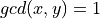
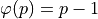
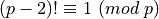

Euler and Wilson’s Theorems¶
Euler’s phi function or Euler’s totient function¶
Consider a positive integral power of a prime number, for example, .
How many numbers smaller than this number are relatively prime to this number?
x and y are relatively prime or coprime when .
This number is called the Euler’s phi function or Euler’s totient function and is denoted by the Greek letter “phi”: .
Clearly, any number that divisible by 2 will have 2 as a common factor with . There are such numbers smaller than or equal to . All other numbers will be relatively prime to .
Hence,  .
.
Thus, for any prime p and positive integer k, .
As a special case, for any prime p, .
The Euler’s phi function is a multiplicative function (stated here without proof). If a and b are relatively prime, then . This can be recursively extended to more than two numbers. For example, if a, b, and c are pairwise relatively prime, then .
Hence,
We now state two theorems without proofs. A link is presented at the end of this section for some background which is advanced and can be skipped for most applications.
Euler’s Theorem¶
If a and n are relatively prime, then .
Example:
Note: . This does not contradict Euler’s theorem because 2 and 100 are not relatively prime.
The special case of Euler’s theorem when n is a prime is called Fermat’s little theorem.
Euler’s theorem is a useful tool while finding remainders.
For example, what are the last two digits of ?
What are the last two digits of ?
Let .
Thus, we need solution of the system resulting in a unique residue modulo 100.
The second congruence short-lists the following residues modulo 100: 24, 49, 74, 99. The one that satisfies the first congruence is 49.
Wilson’s Theorem¶
If p is a prime greater than 2, then .
For any number n, . Thus, Wilson’s theorem can also be written as
Example:
What is the remainder when is divided by 17?
Let .